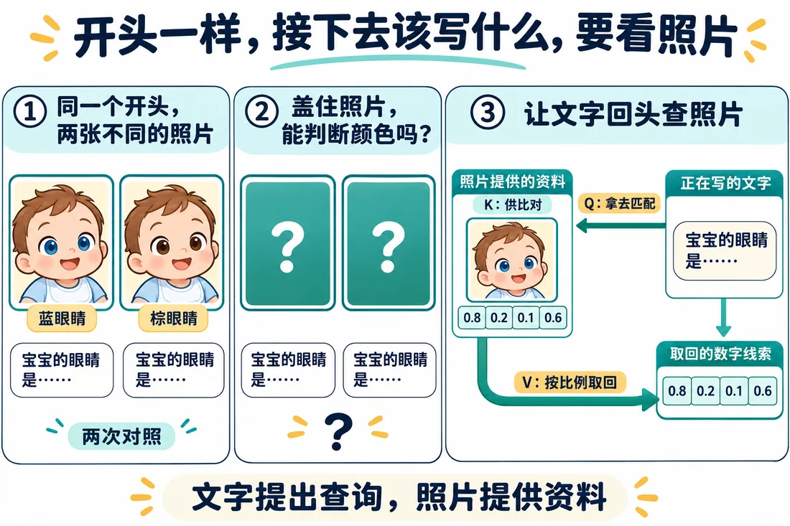
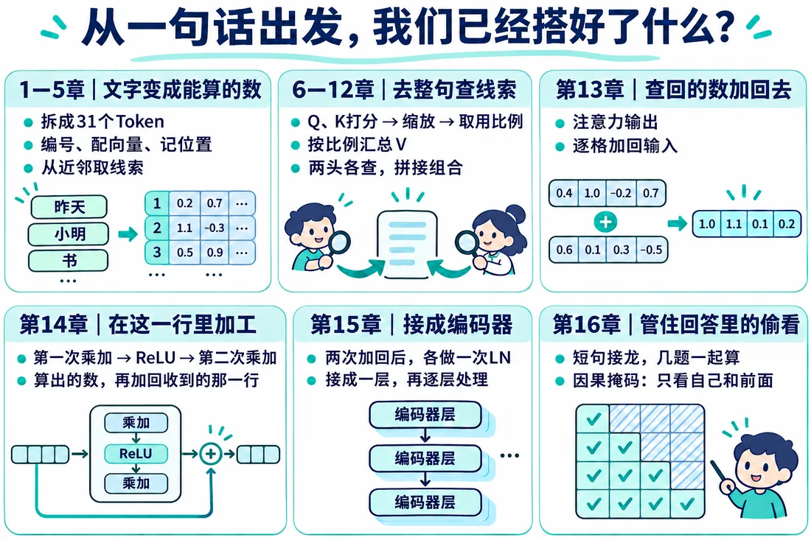
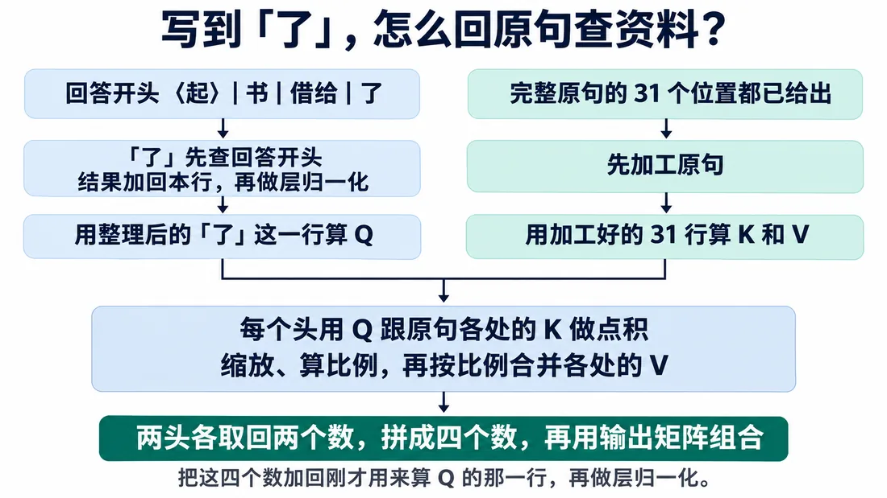
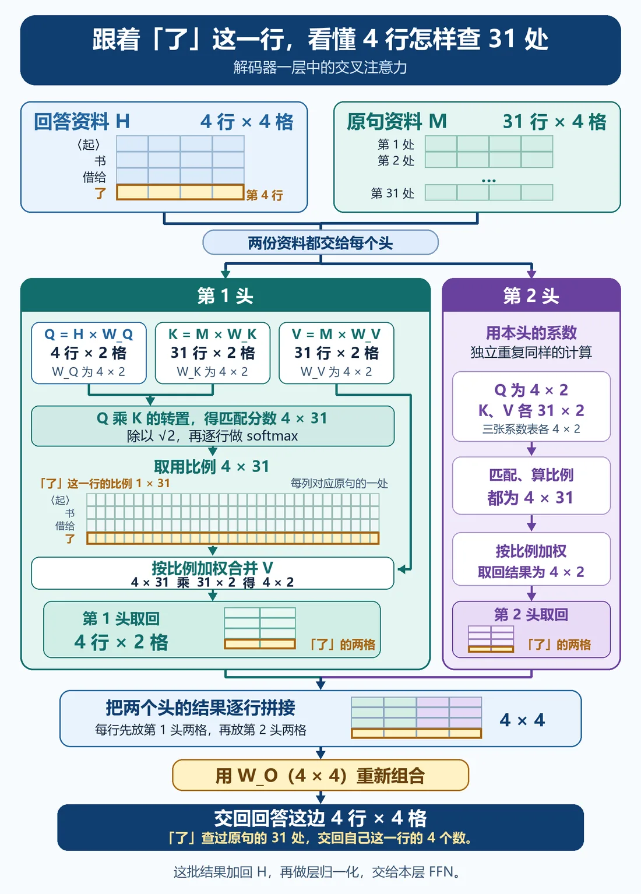
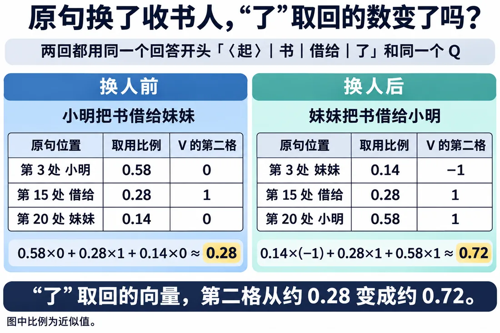
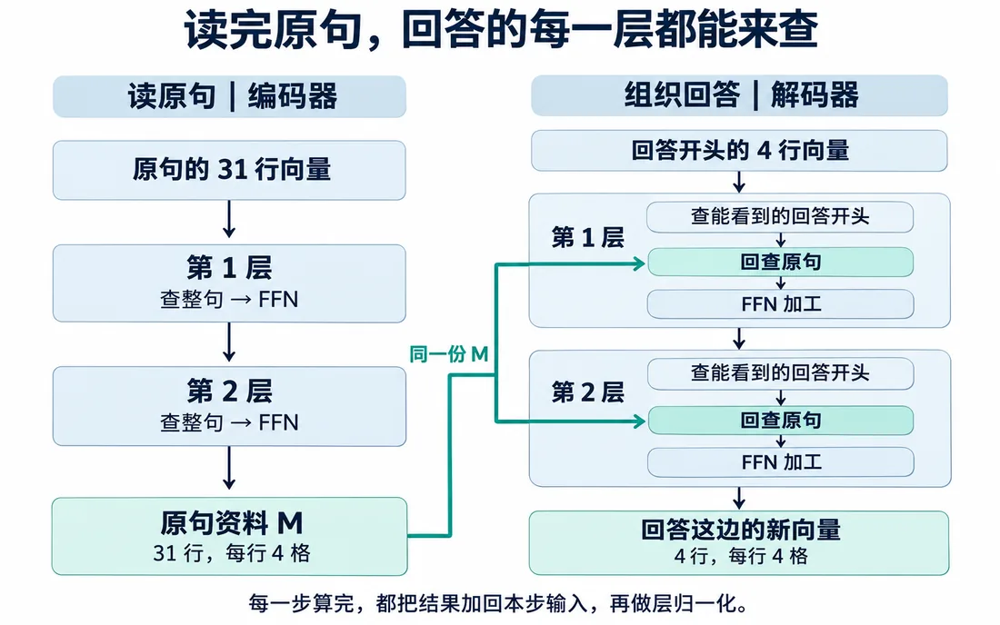

1. 写回答前，为什么得先回头看
先看这张图。
同样一句“宝宝的眼睛是……”，配蓝眼睛、棕眼睛两张照片，答案就不一样。
把照片盖住，光看半句话，判断不了。

回到接龙也一样。
给“书｜借给｜了”后面接什么，不能光盯着这几个字，得回原句里找。
点一下按钮，看原句人物对调后，正确答案怎么变。
点完对调，再看静态图：资料一变，正确答案也跟着变。

前情回顾
这一篇要解决：回答对不对，得回原句确认。

这一篇要解决用交叉注意力，让回答带着问题回查原句。
大概阅读约 12–16 分钟
先记住角色：
先把原句的 31 个位置放在这儿，后面每一站都可以回头对照。
先看这张图。
同样一句“宝宝的眼睛是……”，配蓝眼睛、棕眼睛两张照片，答案就不一样。
把照片盖住，光看半句话，判断不了。

回到接龙也一样。
给“书｜借给｜了”后面接什么，不能光盯着这几个字，得回原句里找。
点一下按钮，看原句人物对调后，正确答案怎么变。
点完对调，再看静态图：资料一变，正确答案也跟着变。
我们来两回接龙，回答开头都是“书｜借给｜了”。
第二回，在电脑回答前，偷偷把原句里的“小明”“妹妹”对调。
可这时候原句还没接进计算。到现在为止，回答这边的电路，根本没接原句这根线。
电脑给候选词算的分，两回一模一样。
它根本不知道原句变了，照旧把“妹妹”排第一。
可这回收书的是小明，这就答错了。
所以得让回答在给答案前，真的去查一次原句。
办法是让回答这一行用自己的数算出 Q，再拿 Q 去原句里查。
角色分清楚：
这种从一份文字发问、到另一份文字里找线索的办法，叫交叉注意力。
别和第 12 篇的多头搞混：
先猜一猜它会怎么回查。再打开下面的演示，亲手走一遍。
“了”带着问题，在原句的小明、借给、妹妹三个人里找。看谁的匹配分高，就多取谁。
点上面按钮开始。
动手回查以后，再看静态图：“了”就是这样带着问题回到原句。

这里可以先歇一下，下次从这一站接着读。
再固定一次角色：
两回都用同一个 Q。
“了”取回的第二格：
原句换了人，变化就传到了回答这一行。

下面是完整规模的示意数据。选回答的某一行，看它对原句 31 个位置各取多少。
可选材料先放这儿。下面回到主例子，看原句变化怎样传到取回的数。

先看取回的数会变。再把整条回答侧的通路接起来。
掩码自注意力、交叉注意力和 FFN 合在一起，这条回答侧的通路，就是解码器。

这一篇收个尾
这一篇拿到：交叉注意力，回答能根据原句变化取回不同结果。
下一篇接着看：给候选词打分并选出下一个词。